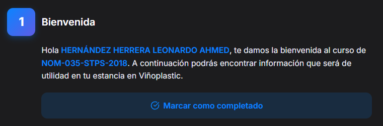
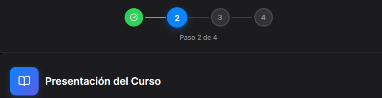
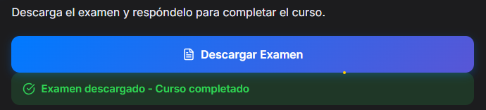

Guía de Inicio Rápido
1
Acceso al Portal
Ingresa a la página principal:

Paso 1: En la página de inicio, busca y haz clic en el botón
Candidatos
ubicado en el centro de la pagina
Una vez en el portal de candidatos, ingresa tus datos:

ID del Empleado: Tu número de nómina preliminar (Ej: 3204).
CURP: Tu Clave Única de Registro de Población.
Código de Acceso: Código de seguridad de 6 dígitos.
Si tienes problemas para ingresar, verifica que tu CURP esté escrita correctamente. Si
sigues teniendo problemas, haz click en el botón de whatsapp.
2
Tu Panel del Candidato
Al ingresar, verás tu panel principal dividido en secciones clave. Es importante que revises cada una:


Información Importante & Primer Día: Revisa instrucciones sobre
vestimenta, horarios y qué traer.
Datos Generales: Verifica que tu nombre y puesto sean correctos.
Cursos de Inducción: Esta es la sección principal. Aquí verás los cursos
que debes completar paso a paso.
Acción Requerida: En la sección de "Cursos de Inducción", haz clic en cada
tarjeta para abrir el contenido.
Al finalizar cada material, recuerda hacer clic en "Marcar como Completado" para que se registre tu avance.
Al finalizar cada material, recuerda hacer clic en "Marcar como Completado" para que se registre tu avance.
3
Dentro del Curso (Paso a Paso)
Al abrir un curso, verás una serie de pasos secuenciales. Debes completar uno por uno.

Figura 1: Vista inicial con próximos pasos bloqueados.

Figura 2: Al marcar como completado, se desbloquea el siguiente paso (ej. Presentación).
El sistema te guiará. No puedes saltar pasos.

Al terminar de leer o ver un material, haz clic en el botón azul "Descargar Examen" (Para
que marque como completado).
Nota: Solo podrás descargar el examen final cuando hayas completado los 3 pasos
anteriores.